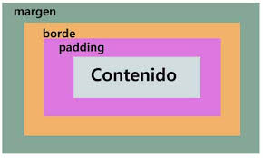

<h1></h1>
Debe haber solo un h1 por pagina.
Pero los elementos h2 hasta h6 se pueden usara mas de una vez.
lista ordenada
<ol></ol>
ordenada
ordenada
ordenada
Dentro del elmento ol va el elemento li para marcar los items
<ol> <li>items</li> </ol>
lista desordenada
<ul></ul>
desordenada
desordenada
desordenada
<li></li>
Dentro del elmento ul va el elemento li para marcar los items
<ul> <li>items</li> </ul>
Enlaces
<a></a>
La etiqueta a en HTML se usa para crear enlaces (hipervínculos) que permiten a los usuarios navegar a otras páginas web, recursos, o ubicaciones dentro de la misma página. Es uno de los elementos fundamentales de la web que permite la navegación entre documentos.
Atributos
Tiene como atributo el href="direccion de la siguiente pagina web"
Tambien la etiqueta a tiene como atributo target="_blank" y este va abrir la pagina en otra pestania.
target="_self" es le valor por defecto, no abre otra pestania.
<a href="direccion de la siguiente pagina web" target="_blank"></a>
La etiqueta img tiene dos atributos importantes src="direccion de donde esta almacenada la imagen" y alt="descripcion de la imagen"
Por ejemplo:
src="imagen_1.png" alt="Messi besando la copa del mundo"
<img src="imagen_1.png" alt="Messi besando la copa del mundo">
Rutas
Tipos de rutas
Hay dos tipos de rutas las Ambsolutas y las Relativas
Absolutas
Son los enlaces prinsipale y son que va a estar siempre ahi.
direcciones que no impota de donde entremos siempre va ser lo mismo.
Relativas
Son anlances que depende de donde estan los archivos, se llaman de distintas maneras.
por ejemplo: si tengo dentro de la carpeta mi web, otra carpeta img
donde guardo todas las imagenes que voy a usar en mi web, entoces no puedeo usar el atributode src="imagen_1"
por que el archibo html y el archibo de imagen estan en distintas rutas/ carpetas.
por ejemplo:
carpeta :
mi web
archibo.html
carpeta img :
imagen_1
En toces hay dos maeneras de acceder a "hacia adentro " o "hacia afuera "
que este final seria intentar acceder a un elmento que esta por afuera de la carpeta en la que estamos.
acceder hacia adentro: de archivo.html a carpeta img a imagen_1 :
se utiliza la barra / : src="img/imagen_1.png"
img/: dentro de la carpeta imga busca la imagen , nombre de imagen.
acceder hacia afuera de una carpeta
si queremos acceder a un archivo que esta por afuera de nuestra carpeta utilizamos el "../archiboQueSeBusca"
src="../video_1.mp4"
Formulario
<form></form>
Estas etoquetas se usan para pedir informacion al usuario.
Cada formulario inicia dentro de una etiqueta form. Dentro de esta se puede agregar
los inputs.
La etiqueta input tiene como atributo el TYPE="tipo de input" ,
en este se espesifica que tipo de input va a ser, por ejemplo
un input numerico type="number" o input de email input="email"
o un input de contrasenia input="password".
Formulario iniciar secion
Enlazar (unir) HTML & CSS
Prinsipal mente tenemos 3 maneras de elazar html con css.
Estilo en linea
Estilos en linea con el atributo style: <img style="width:20px; heigth:20px">
Se dice asi ya que los etilos se lo damos directamente a los elementos html en el archivo html
No es recomendado ya que dificulta la lectura del archibo html y no es facil de mantener el codigo
Mediante la etiqueta <style > </ style >
La etiqueta style se puede poner tanto como en el body como el head, pero se acostumbra a usar en el head.
Aun asi esto no se recomienda ya generalmente hay que escribir muchas lineas de css
para poder estilar.
Archivo externo.css
Se utiliza la etiqueta <link>, esta va solo en el head de nuesto html.
Esta etiqueta tiene 2 atributos necesario
rel="tipoDeArchibo", en este caso stylesheet
href="direccionDelArchivo.css" la direccion donde se aloja el archivo css
<link rel="stylesheet" href="styles.css">
selectores en css
Los selecores son la manera de selecionar uno o varios elementos html en css, esto para darle estilos
Selector por elemento
Este seleciona un tipo de etiqueta simplemente, por ejemplo si selecionamos la etiqueta
<p; en css seria:
p{ propiedad:estilo}
Esto dice que para todo elmento p del archivo html se le van a aplicar estos estilos
Selector por Clases
Cuando agregamos una clase al una tiqueta html y luego seleccionamos esta clase desde css, solo
se van a modificar los elemento que pertenezcan esta clase.
Por ejemplo <p class="nombre" >
Seleccionamos en css por clase:
.nombre{
color:red;
}
Entonces este estilo que le dimos a la clase nombre va a modificar solo a aquellos elementos que tengan la dicha clase
ejemplo
<p clase="nombre"> Sara </p >
<p> es super buena persona </p >
Sara
es super buena persona
Selector por id
Para selecionar a un elmento html desde css por su id, solo demo usar el #id.
Recuerda que los id son unicos, un elemento debe tener unico id.
ejemplo:
#nombre{
color: blue;
}
Modelo de caja (box model)
El Box Model en HTML y CSS es un concepto fundamental que define cómo los elementos de una página web son representados y espaciados en el diseño visual. Cada elemento de bloque en HTML se representa como una caja rectangular que está compuesta por cuatro áreas:
Contenido (Content): Esta es la parte donde se muestra el contenido real del elemento (texto, imágenes, etc.). Es el área interna de la caja.
Relleno (Padding): Este es el espacio entre el contenido del elemento y su borde. El padding se puede ajustar individualmente para los lados superior, derecho, inferior e izquierdo.
Borde (Border): El borde envuelve el contenido y el relleno del elemento. Puede tener diferentes estilos (sólido, punteado, etc.), grosores y colores.
Margen (Margin): Es el espacio fuera del borde del elemento. Se utiliza para crear separación entre este elemento y los demás elementos circundantes.

contenido
contenido
contenido
Tamaño de caja (box sizing)
La propiedad box-sizing en CSS define cómo se calcula el tamaño total de un elemento (ancho y alto) incluyendo el contenido, el relleno (padding) y el borde (border).
box-sizing tiene 2 propiedades prinsipales
contendor-box: (valor por defecto)
Solo el contenido del elemento se incluye en el ancho y alto especificados. El relleno y el borde se añaden fuera de esas dimensiones.
Ejemplo: Si defines un ancho de 200px y añades 20px de relleno y 10px de borde, el tamaño total será 200px (contenido) + 40px (relleno) + 20px (borde) = 260px.
border-box:
El ancho y alto especificados incluyen el contenido, el relleno y el borde. El relleno y el borde se restan del tamaño total del contenido.
Ejemplo: Si defines un ancho de 200px y añades 20px de relleno y 10px de borde, el tamaño total seguirá siendo 200px, con el contenido ajustado automáticamente para acomodar el relleno y el borde dentro de esos 200px.
Ejemplo
Definimos un div con un tamaño de 100px.
Un padding de 10px, borde de 10px.
contenido
tamanio de la caja: 120px
Colores
Exadecimal
Es un sistema que tiene 16 posibilidades #EE09FF.
Aquí, cada par de dígitos hexadecimales representa un componente del color en el formato #RRGGBB:
EE (rojo), 09 (verde), FF (azul).
#00-00-00 cada uno de estos pueden tomar cualquier valor entre 0 y F.
EE La primera 'E' es más importante que la segunda, ya que determina una mayor intensidad del color rojo.
Cada una de estas letras selecciona un tono específico de rojo, siendo 'EE' un valor muy alto cercano al máximo.
09 La primera cifra o letra es más importante.
En este caso, el '0' tiene más peso en determinar el tono verde.
Los valores más bajos (como '0') resultan en tonos más oscuros de verde.
FF La primera letra elige el tono más importante.
'FF' es el valor máximo en hexadecimal, lo que significa que este es el tono azul más brillante posible.
#
colorear
Medidas
Medida Absolutas
Centimetros: cm.
Milimetros: ml.
pulgadas: in.
pixeles: px.
Estas medidas se utilizan cuando se quiere utilizar en la vida real, como
por ejemplo, Imprimir un texto que tenemos.
Por ejemplo a este texto le damos un padding de 10cm, entoces al imprimir
este va a salir con un padding de 10 cm .
Medias Relativas
La medidas relativas se llaman asi porque son relativas a algo mas.
Por ejemplo el uso de la medida de %, este se refiere siempre a una caja a la
que se hace referencia.
PJ
Tenemos una caja de padre de 100px y una su hija con un width de 50% y un
height de 50%, el 100% de la caja hija va a ser de 100px
Estas se llaman asi ya que deben hacer referencia a algo mas.
Por ejemplo el Porcentaje (%), si Definimos una caja con el width: 50% y el height:50%
esta caja va a tomar como referencia a su caja padre. Si la caja padre tiene
un width: 100px y un heigth:100px, entocesla caja hija va a tener una medida en pixeles de width: 50px y height:50px.
Ejemplo:
Definimos una caja padre con las siguiente medidas : width:100px y heigth:100px.
Caja Padre
hijo
50%
Tamanio en px de la caja Padre
Lo bueno de usar medidas relaticas es que estas se adaptan a la
medida del contendor.
Por ejemplo si ahora queremos cambiar la medida de contendor padre
esta seguiria sindo el 50%.